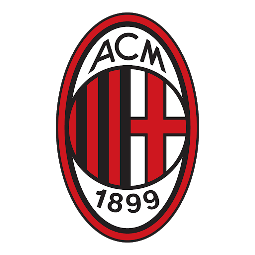

Equipos lideres de la Serie A
Actualmente en la liga los equipos lideres son:
- Inter Milán
- Milan
- Atalanta
- Juventus
Equipos que han sido campeones mas veces:
- Juventus
- Inter Milán
- Milan
Historia del equipo:
- Juventus
La Juventus Football Club S.p.A. conocida simplemente como Juventus o Juventus de Turín,5 o popularmente, La Vecchia Signora o La Juve (AFI: ˈjuːve), es un club de fútbol italiano con sede en la ciudad de Turín, capital de la región del Piamonte. Fue fundado el 1 de noviembre de 1897 con el nombre de «Sport Club Juventus» por un grupo de estudiantes locales.6Es el segundo equipo de fútbol italiano más antiguo entre los que siguen activos —después de la sección de fútbol del Genoa— y, junto con el Torino, es uno de los dos clubes de fútbol profesionales de la capital piamontesa. Vinculada a la familia Agnelli desde 1923,7 el club ha militado ininterrumpidamente en la máxima categoría profesional del fútbol italiano (denominada desde 1929 Serie A) desde su fundación,Nota 2 con la única excepción de la temporada 2006-07. El club ejerce de local desde el año 2011 en el Allianz Stadium, que cuenta con una capacidad de 41 507 espectadores.8
- Inter Milán
El Inter de Milán6 (oficialmente en italiano Football Club Internazionale Milano S.p.A.),7 también conocido como Internazionale (en español, Internacional) y más conocido en su país como Inter,8 es un club de fútbol de Italia con sede en la ciudad de Milán, capital de la región de Lombardía, y de propiedad principalmente china. Fue fundado el 9 de marzo de 1908, bajo el nombre de Foot-Ball Club Internazionale.
- Milan
La Associazione Calcio Milan (en español, Asociación Calcio Milán), también conocida como A. C. Milan o Milan, es un club de fútbol italiano que pertenece a la ciudad de Milán, en la región de Lombardía. Fundado el 16 de diciembre de 1899 por Alfred Edwards y Herbert Kilpin, entre otros, bajo el nombre de Milan Foot-Ball & Cricket Club,11 adoptó su actual denominación en 2003, la cual tuvo su origen en 1945.
- Juventus
- La Juventus Football Club S.p.A. conocida simplemente como Juventus o Juventus de Turín,5 o popularmente, La Vecchia Signora o La Juve (AFI: ˈjuːve), es un club de fútbol italiano con sede en la ciudad de Turín, capital de la región del Piamonte. Fue fundado el 1 de noviembre de 1897 con el nombre de «Sport Club Juventus» por un grupo de estudiantes locales.6Es el segundo equipo de fútbol italiano más antiguo entre los que siguen activos —después de la sección de fútbol del Genoa— y, junto con el Torino, es uno de los dos clubes de fútbol profesionales de la capital piamontesa. Vinculada a la familia Agnelli desde 1923,7 el club ha militado ininterrumpidamente en la máxima categoría profesional del fútbol italiano (denominada desde 1929 Serie A) desde su fundación,Nota 2 con la única excepción de la temporada 2006-07. El club ejerce de local desde el año 2011 en el Allianz Stadium, que cuenta con una capacidad de 41 507 espectadores.
- Inter Milán
- El Inter de Milán6 (oficialmente en italiano Football Club Internazionale Milano S.p.A.),7 también conocido como Internazionale (en español, Internacional) y más conocido en su país como Inter,8 es un club de fútbol de Italia con sede en la ciudad de Milán, capital de la región de Lombardía, y de propiedad principalmente china. Fue fundado el 9 de marzo de 1908, bajo el nombre de Foot-Ball Club Internazionale.
- Milan
- La Associazione Calcio Milan (en español, Asociación Calcio Milán), también conocida como A. C. Milan o Milan, es un club de fútbol italiano que pertenece a la ciudad de Milán, en la región de Lombardía. Fundado el 16 de diciembre de 1899 por Alfred Edwards y Herbert Kilpin, entre otros, bajo el nombre de Milan Foot-Ball & Cricket Club,11 adoptó su actual denominación en 2003, la cual tuvo su origen en 1945.
Juventus Inter Milán Milan  Si necesitas mas informacion sobre la Serie A,haz click en el link de abajo: